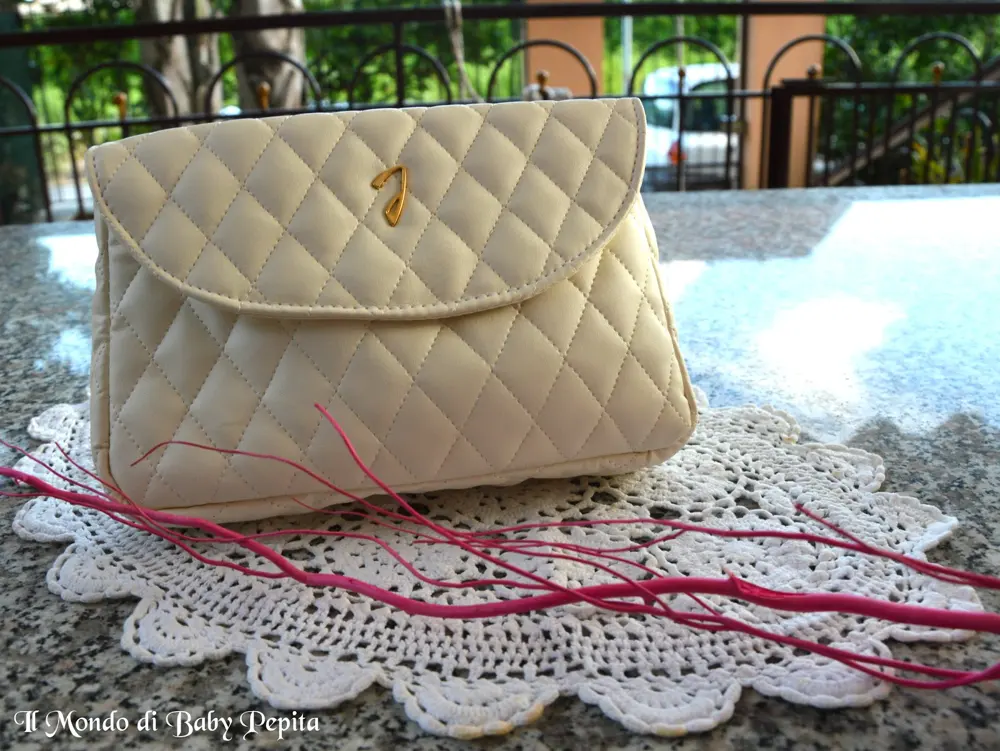
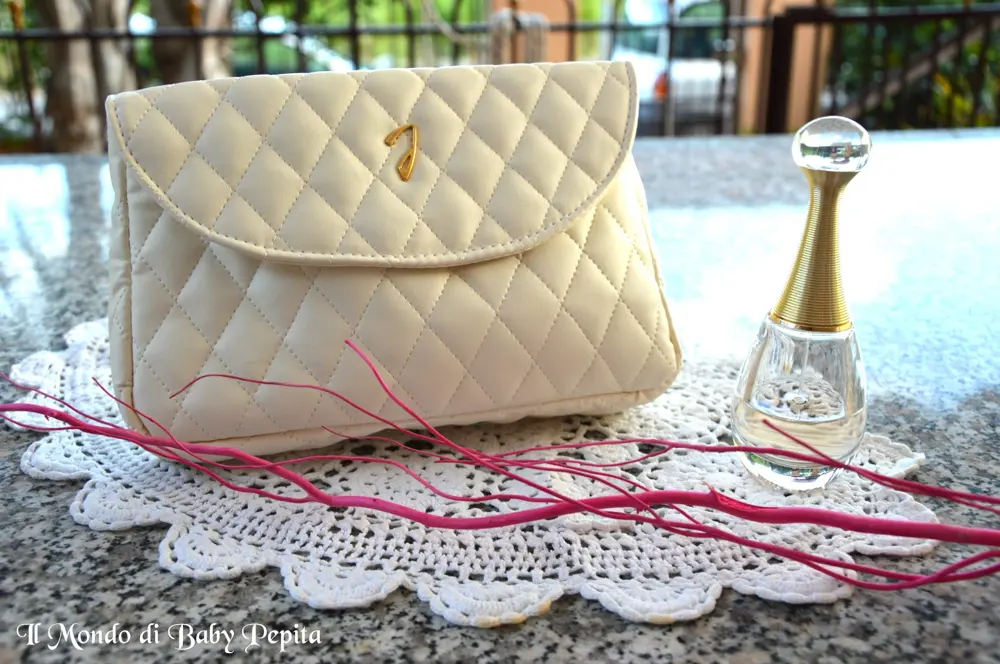
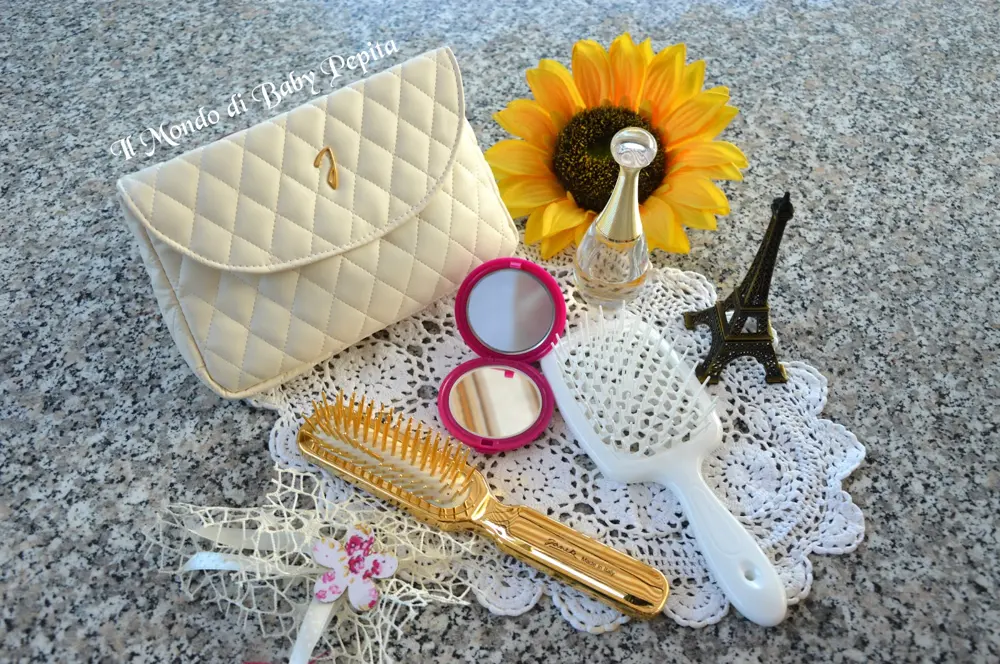

Janeke - un beauty ricco di eleganza

Noi donne ormai siamo solite circondarci di accessori di bellezza, che sia per il corpo, per i capelli ecc. e di tutte queste cose non riusciamo a fare a meno di comperare e riempirci di beauty case, pochette e quant'altro che contengano tutte queste stupende cose. .Oggi ho qui una pochette davvero deliziosa ed elegante da farvi vedere. .

Vi avevo già parlato la scorsa settimana di questa azienda italiana davvero di alta qualità.La Janeke 1830 è ormai un marchio per chi vuole essere alla moda con eleganza e particolarità. .Tra le tante cose mi hanno omaggiata di questa pochette porta trucco che a mio avviso è una chicca. . Mi piace tanto in quanto non sembra un accessorio da bagno ma io direi che volendo si può utilizzare anche per uscire come borsetta. .e credo proprio che lo farò!
Mi piace tanto in quanto non sembra un accessorio da bagno ma io direi che volendo si può utilizzare anche per uscire come borsetta. .e credo proprio che lo farò!

In tessuto morbido bianco latte, trapuntata con la J di Jeneke sul davanti dorata che da un tocco di eleganza ancor di più alla borsetta. .Si chiude con un click a calamita.
Capiente e pratica allo stesso tempo.

 Nello shop di Janeke ci sono diverse tipologie di pochette da scegliere in fatto di grandezza, tessuto, forma e colore. Contenta di questo beauty che userò sicuramente come porta cosmetici.
Nello shop di Janeke ci sono diverse tipologie di pochette da scegliere in fatto di grandezza, tessuto, forma e colore. Contenta di questo beauty che userò sicuramente come porta cosmetici.Ovviamente vi lascio tutti gli indirizzi qui per vedere lo shop Sito: http://janeke.it/FB: https://www.facebook.com/janeke1830/?fref=ts
In quanto a noi ci leggiamo alla prossima review :D